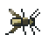
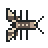
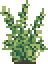

A proper little hunter.
Eight prey species. Little leaps, big lunches. Keep the tank lively without overcrowding it.
SMALL WORLD. EIGHT LEGS. BIG PERSONALITY.
Meet your new pocket companion. A curious jumping spider, a living terrarium, and a whole lot of tiny adventures.

✦✧01 / THE POCKET TERRARIUM
The device world, scaled up: the same canvas art,
care, progression, menus and three minigames.
Drag from your spider to aim; release to pounce. Auto Feed is off until checked in Settings.
Keyboard: M toggles the HUD; arrows aim, Space pounces. Browser storage can be cleared: download a backup in Settings → SD Card.

Eight prey species. Little leaps, big lunches. Keep the tank lively without overcrowding it.
Food, mood, energy and a clean home. Give your spider room to rest, play and grow.

Earn Silk, choose a gift, and watch your little friend visit. A tiny ritual, all your own.
02 / FROM BROWSER TO BOARD
Waveshare ESP32-S3-Touch-AMOLED-2.16
16 MB flash · 8 MB PSRAM · 480 × 480
GIVE YOUR BOARD A LITTLE LIFE
Use a USB data cable. Choose the board’s USB Serial/JTAG port (303A:1001). If bootloader entry fails, hold BOOT, tap RESET, then release BOOT and retry.
Only the five release images are written. NVS is not erased. Back up your pet first, especially before changing firmware versions. Release hashes check integrity, not publisher identity—use a trusted copy of this site.
Load the release manifest to inspect the version and images before connecting.
No firmware written.
A BACKUP FOR YOUR EIGHT-LEGGED FRIEND
Export the complete, versioned raw save from your device. View a backup offline, or restore an exact compatible blob. WiFi passwords are not in pet backups.
Opening the port may reset your device. We wait three seconds, then finish the help response before sending commands. Restoring never automatically reboots.
No backup loaded. The bundled schema works without a board.
LOCAL BY DESIGN
Configure a 2.4 GHz network over your local USB connection. Your device joins and saves the network only on success. Neither SSID nor password is logged, stored by this site, or sent to a server.
Connect the console under “Your pet save” first. After WiFi setup the console log is suppressed until you disconnect, protecting asynchronous radio messages too.
Open console tools →03 / FIELD NOTES
The native game runs on ESP-IDF and LVGL, with hand-built pixel artwork and a direct canvas renderer. The browser habitat is a separate JavaScript game using the same art.
No analytics, accounts, external fonts or cloud saves. The simulator uses its own local browser storage. Device backups are files you choose to download. Credentials go only through USB.
Device tools need desktop Chrome or Edge on HTTPS or localhost. Safari, Firefox, mobile browsers and ordinary HTTP can still play the simulator, but cannot flash through Web Serial.
Do not unplug during flashing. If interrupted, enter download mode with BOOT + RESET and reflash. The site will not erase all flash, reboot after restore, or invent a successful write. The save viewer validates version, header and payload length; firmware is the final authority on field validity. Keep your original backup.